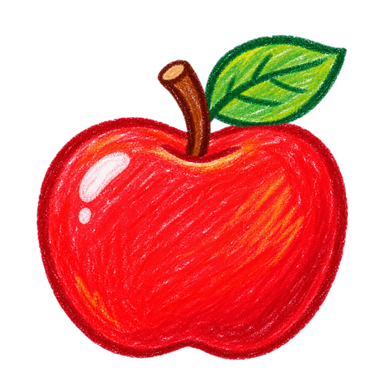

PB1 · MY ENGLISH CLASS
聽老師說，再跟著說！
跟著學校課程學字母、看圖認單字、練短句；一天練習 5～10 分鐘就好。

MY ENGLISH ADVENTURE
今天想學什麼？
挑一個喜歡的方式，開心學英文！
已學會 0 / 38 個單字⭐ 0
LISTEN TO TEACHER
老師原音教材
選擇一段課堂錄音
老師原始錄音依 A–B、C–D、E、F–G 分段；專注模式提供單字候選片段，切點尚未完成逐字核對，可自行微調。下方 🔊 為裝置英文語音，與老師原音不同。
FOCUS MODE · 專注學習
一次一張圖，跟著老師學
先看圖，再聽單字、聽短句、跟著說；不需要一直往下滑。
SEE · LISTEN · SAY
Aa · Apple
我會跟著說
先聽單字與短句，再跟著說；麥克風跟讀需要瀏覽器支援及授權。
今天玩哪一關？
有看字選圖、聽力、圖字配對、記憶翻牌四種玩法。做對就拿星星！
① 今天想練哪些字母？
② 選擇遊戲
小小學習進度
A · 1/6
Apple
蘋果
🖍️ 看老師短句的情境圖
選擇上方聲音後，可以再按重播。
🎚️ 校正老師原音邊界（候選片段）
每個字母前兩個單字共用同一組教學錄音，調整其中一張會同步套用另一張。其餘單字個別調整。目前提供 31 份獨立候選教學片段，尚未完成逐字對齊；前兩個單字共用同一份。可預聽片段開頭／結尾，人工確認後調整秒數；本機儲存的調整會改用原始錄音指定秒數播放。